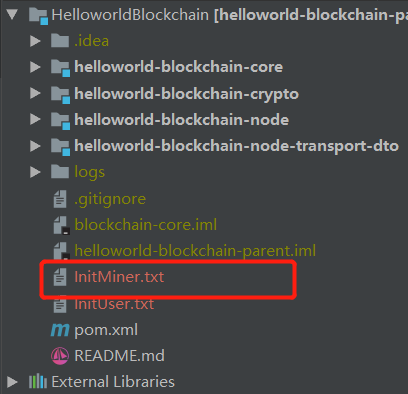
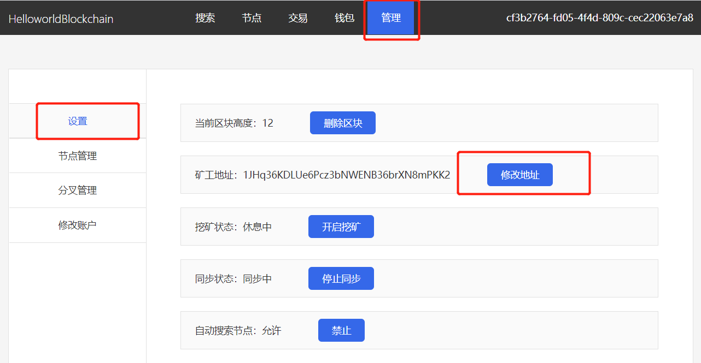
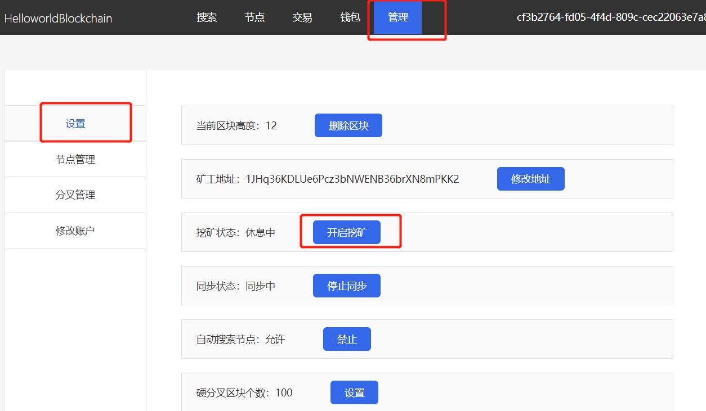
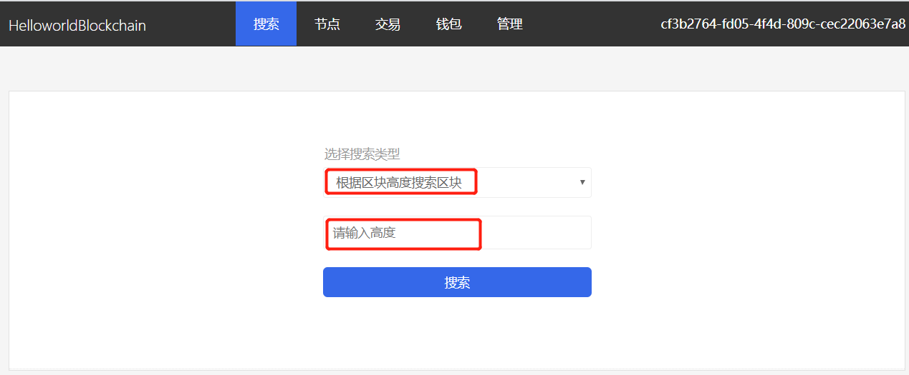
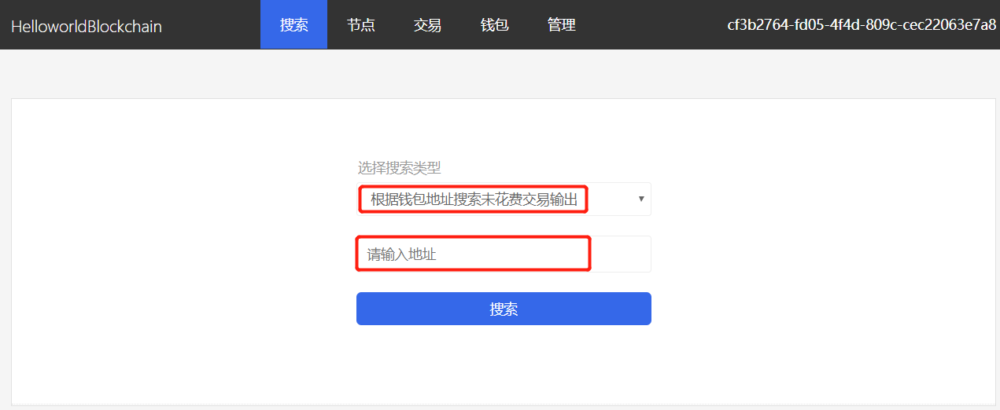

HelloworldBlockchain使用手册
Github地址
遇到问题
集成开发环境搭建
项目打包与发布
默认网站管理员账户
登录系统
钱包地址是什么
主动生成钱包
如何转账进行交易
默认矿工钱包
设置挖矿地址
启动/关闭挖矿
查询区块信息
查询账户余额
github地址
https://github.com/xingkaichun/HelloworldBlockchain
遇到问题
如果你遇到问题，可以加创始人微信(HelloworldBlockchain)一起探讨。
集成开发环境搭建
eclipse
HelloworldBlockchain项目没有任何复杂依赖，请搜索eclipse如何导入已存在的maven项目。 成功将项目导入eclipse后，找到类文件com.xingkaichun.helloworldblockchain.node.HelloWorldBlockChainNodeApplication，右键运行，正常情况下则会启动成功。接下来，快乐的调试代码吧！项目的前端地址是：http://localhost:8444 。
intellij idea
HelloworldBlockchain项目没有任何复杂依赖，请搜索idea如何导入已存在的maven项目。 成功将项目导入idea后，找到类文件com.xingkaichun.helloworldblockchain.node.HelloWorldBlockChainNodeApplication，右键运行，正常情况下则会启动成功。接下来，快乐的调试代码吧！项目的前端地址是：http://localhost:8444 。
项目打包与发布
使用maven打包有两个步骤：一是进入目录，二是运行打包命令。详细命令如下:
cd helloworld-blockchain-node
mvn -P package-profile -Dmaven.test.skip=true clean package install spring-boot:repackage assembly:single
发布项目有四个步骤：一是进入打包结果目录，二是解压，三是进入解压文件目录，四是运行启动脚本
cd target
tar -zxvf helloworld-blockchain-node-*.tar.gz
cd HelloworldBlockchainNode
./start.sh restart
默认网站管理员账户
默认用户名admin
默认密码123456
请及时修改默认管理员账户与密码
登录系统
打开网址http://localhost:8444/login.html，输入管理员账号与密码。
钱包地址是什么
在区块链网络里进行转账、收账的账号。就像银行卡的号码。
主动生成钱包
打开网址http://localhost:8444/wallet.html，点击[生成钱包按钮]。
如何转账进行交易？
打开网址http://localhost:8444/transaction.html，按照要求操作，进行转账。
默认矿工钱包
系统第一次启动后，会自动生成一个钱包。钱包保存在应用安装目录里的InitMiner.txt文件里。
矿工挖矿成功后，区块链网络会自动将奖励发送到矿工的钱包里。

设置挖矿地址
系统默认分配了一个矿工钱包给用户，当然用户可以主动生成一个钱包作为矿工钱包。

启动/关闭挖矿

查询区块信息

查询账户余额
